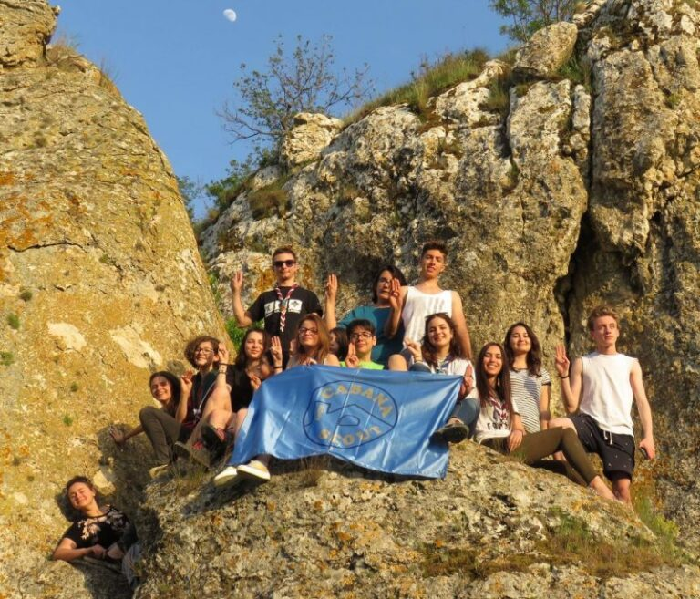

Ana, explorator la AG ONCR

Anul acesta, mandatul Adunării Generale a centrului local pentru reprezentarea la Adunarea Generală a ONCR a fost acordat Anei Vătau – primul explorator care reprezintă Cabana Scout la acest nivel. A fost un context de dezvoltare personală pe care Ana a dorit să ni-l împărtăşească, odată încheiată această experienţă. Aşadar, iată cum a trăit ea AG ONCR 2017:
1-2 aprilie Cristian, jud. Braşov. Gândul ne duce deja la RoJam 2.0 17, însă noi am ajuns aici cu alt scop: Adunarea Generală a ONCR 2017
În jurul orei 8 dimineaţă intrăm pe uşile Casei de Cultură din Cristian care avea să găzduiască AG-ul. Până la începerea efectivă, am fost de mare ajutor prietenei noastre Nadia la înscrieri şi pregătirea hârtiilor de vot. La ora 10 sala era deja plină de râsete şi bucurie datorită faptului că ne revedeam cu prieteni din toate colţurile ţării.
Încă din 2015 particip ca voluntar la acest eveniment, însă anul acesta am schimbat perspectiva şi am avut onoarea să reprezint centrul şi să respect votul colegilor cercetaşi făcut cu două săptămâni în urmă la AG-ul centrului local.
Timp de două ore a existat o dezbatere privind un punct pe ordinea de zi, care a adus în mijlocul nostru foarte multe controverse şi idei de tot felul. Chiar dacă eu aveam o părere proprie făcută deja în cap despre acest subiect am fost încântată să văd cum oameni care lucrează în diferite domenii văd această problema. Toată lumea a intrat în această discuţie cu puncte de vedere mai convingătoare sau nu, evident ajungând şi la abateri de la subiect.
Masa de prânz ne-a mai dezmorţit puţin şi astfel la ora 14 am declarat deschis AG 2017. Anumite subiecte au fost votate mai rapid, pentru altele existau mai multe întrebări şi astfel se lungea conversaţia. Majoritatea întrebărilor m-au ajutat personal să înţeleg cum trebuie citit un document şi cât de relevante sunt subiecte pe care până acum nici nu le înţelegeam.
Seara a venit cu o surpriză şi anume vizitarea locului care va servi drept camp în acesta vara pentru Rojam17. Cum altfel puteam termina o zi atât de încărcată dacă nu cu un foc de tabără, chităreală şi râsetele cu lacrimi alături de oameni pe care abia i-am cunoscut.
A două zi mi s-a părut ceva mai pozitivă şi constructivă, pentru că trecuserăm în mare parte de subiectele care puteau isca certuri. Lucrările și proiectele care ajută la dezvoltarea organizației mă vor motiva și pe mine în implementarea viitoarelor proiecte locale.
Aş repeta negreşit această experienţă şi îmi doresc să aplic cât mai corect ce am învăţat.
Ana Vătau